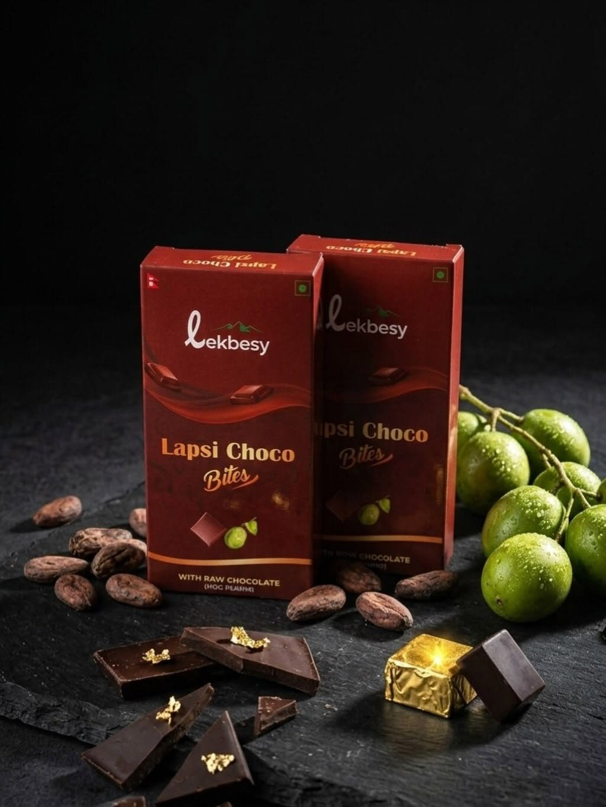

Is This the Next Global Chocolate Trend?
Could lapsi chocolate be Nepal’s answer to Dubai chocolate?

We have all heard of Dubai chocolate.
The now-famous combination of chocolate, pistachio and kunafa has taken social media by storm, turning a single chocolate bar into a global phenomenon. But perhaps the most interesting part of the Dubai chocolate story is not just the chocolate itself. It is what the product has done for the image of Dubai.
Whether deliberately designed as soft PR or simply an unexpected consequence of a viral food trend, Dubai chocolate has helped reinforce Dubai’s image as a place associated with luxury, premium experiences and new ideas. A chocolate bar has, in its own small way, become part of the way people around the world see the city and the wider Arab world.
So, could Nepal do something similar?
Nepal already has a strong international identity. We have Mount Everest, the Himalayas, trekking, adventure and some of the world's most spectacular landscapes. But when it comes to products that can travel internationally and introduce people to Nepalese culture in a modern and accessible way, there is still enormous room to grow.
Momo is probably one of the first foods people associate with Nepal. But perhaps Nepal needs its own version of Dubai chocolate: something familiar enough for the world to understand, but uniquely Nepali enough to make people curious about where it came from.
This is where LekBesi comes in.
A young company based in Nepal has created its own take on the chocolate trend, using one of Nepal's much-loved fruits: lapsi.
For generations, lapsi has been a familiar part of Nepali food culture, particularly through products such as titaura. It is nostalgic, distinctly Nepali and instantly recognisable to many of us.
But titaura has never quite had the global visual appeal of a beautifully packaged chocolate bar.
LekBesi's idea brings those two worlds together.
Nepali flavour and nostalgia, packaged in a product that can potentially be understood anywhere in the world.
And that is what makes this more interesting than simply another chocolate trend.
Imagine a product that someone in Sydney, London, New York or Tokyo sees on TikTok or Instagram. They may have never heard of lapsi. They may know very little about Nepal. But they see an intriguing chocolate bar, try it, and suddenly ask:
“What is lapsi?”
That is how cultural products travel.
And in the age of social media, you may soon see Nepali celebrities and well-known personalities getting involved too. Imagine the likes of Hari Bansha Acharya or Paras Khadka trying the chocolate on camera and sharing their reactions.

We cannot comment on how the chocolate tastes. That is for people to decide for themselves.
But perhaps the bigger question is whether this could become something much more significant than a chocolate bar.
Dubai chocolate showed how a food product can become part of a city's global identity. Nepal has an opportunity to do something similar, but in its own way.
We already have the mountains.
We already have the adventure.
We already have the culture.
Perhaps now we need more products that allow the world to taste Nepal.
Only time will tell whether lapsi chocolate can achieve the same global influence as Dubai chocolate. But if social media takes it where Dubai chocolate went, LekBesi could be at the beginning of something much bigger: a Nepal-made product that introduces a uniquely Nepali flavour to the world and helps reshape how people see Nepal.
Not just as the home of Everest.
Not just as a destination for trekkers.
But as a country capable of creating products, ideas and culture that can inspire the world.
Could lapsi chocolate be Nepal's Dubai chocolate?
Maybe it's too early to say.
But it's certainly worth watching.